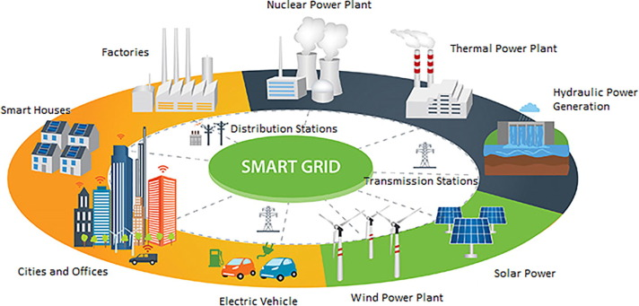
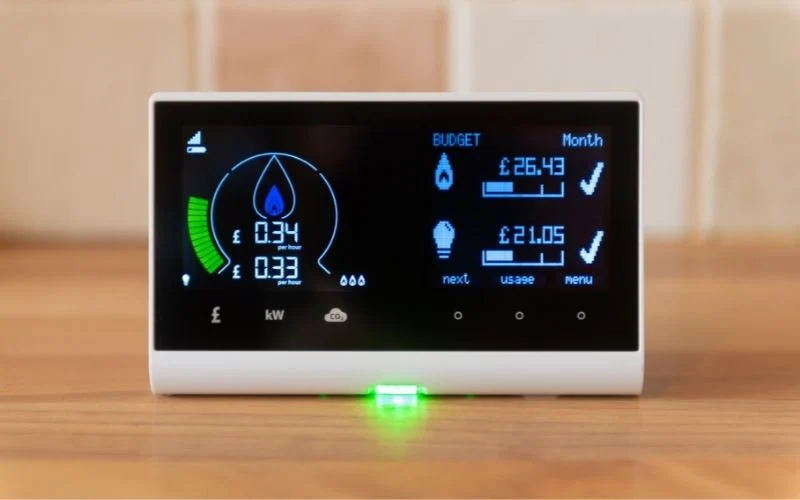
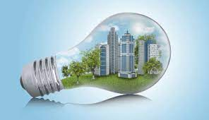
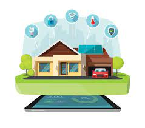

| A smart grid is a modernized electrical grid system that uses advanced technologies to improve the efficiency, reliability, and sustainability of energy delivery. A smart grid is designed to be more flexible and resilient than traditional power grids, and it can incorporate renewable energy sources and energy storage devices to reduce carbon emissions.There are some of the features and benifits of smart grids are Advanced Metering Infrastructure (AMI),Distribution Automation,Renewable Energy Integration,etc |  |
| Energy monitoring and management is the process of tracking and analyzing energy usage in buildings, factories, and other facilities. The goal is to identify areas of high energy consumption and implement measures to reduce energy waste and improve energy efficiency. |  |
Energy-efficient buildings are designed to minimize energy waste and reduce energy consumption.some of the key features of energy-efficient buildings are
|
 |
| IT companies are developing energy-efficient devices, such as computers, servers, and mobile devices. These devices consume less energy than older models, reducing the overall energy consumption of IT systems.some of its feature include Energy-efficient devices are designed to consume less power than conventional devices,Energy-efficient devices are equipped with power management features, such as automatic power-off or sleep modes |  |
| With video conferencing and other collaboration tools, people can meet virtually instead of traveling to meetings, reducing the carbon footprint associated with travel.Virtual meetings in IT offer many benefits, such as increased collaboration and reduced travel costs. |